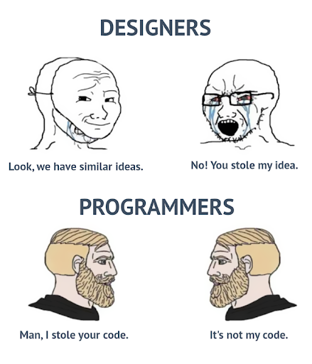

Meme Review {Programming Edition}
Designers vs Programmers
In this meme, we see the sharp contract between designers and programmers. Designer 1 exclaims that Designer 2 and his ideas are pretty similar. However, Designer 2 (obviously frustrated) instantly accuses Designer 1 of stealing their idea.
Meanwhile, in the programmer's corner, Programmer 1 admits to Programmer 2 that they indeed have stolen their code. However, Programmer 2 responds calmly, "It's not my code."
This meme highlights the funny dynamic between programmers and designers, while designers often place higher value on originality and ownership, programmers place greater emphasis on "making it work" and acknowledge that code could be reused for efficiency & making it better via contribution - Open Source.
Bug Hunt
This meme, features Gru from "Despicable Me" in a programming setting. Here, Gru encounters a bug in the program, as indicated by a test case that he wrote. However, instead of being discouraged, Gru writes even more tests to find the issue. The humour lies in fact that the Bug wasn't in the program but in the first test.
This meme showcases the tendency that a lot of programmers have, i.e. to debug extensively, going beyond the actual source of the problem (which turns out to be pretty mundane).
Don't Fix it, if it ain't broke
In this meme, we witness a relatable scenario, that I'm pretty sure most if not all programmers have faced before, depicting a penguin that represents a program. Initially the code runs perfectly, producing the desired result. But, after the programmer cleans up the code, making it more organized and efficient, the penguin {program} declares - "Well, now I am not doing it."
This situation displays the paradox of code maintenance. While its logical to think that cleaning up the code would improve the readability and the overall longevity/quality of the program, sometimes doing so could lead to unexpected issues, causing the program to produce unexpected results or to crash entirely.

Programming Languages "Ranked" - based on "totally legit quotes"
| Rank | Programming Language | Funny Quote |
|---|---|---|
| 01 | JavaScript | "JavaScript: Confusing people who think it's related to Java since forever..." |
| 02 | C++ | "C++: C makes it easy to shoot yourself in the foot; C++ makes it harder, but when you do it blows your whole leg off." |
| 03 | PHP | "PHP: Programmers hate perfection." |
| 04 | Java | "Java: Write once, debug everywhere." |
| 05 | CSS | "CSS: Making web pages look good since the '90s, or at least trying to." |
| 06 | HTML | "HTML: The building blocks of the web, where indentation doesn't matter but you still feel judged." |
Shubham Mohanty